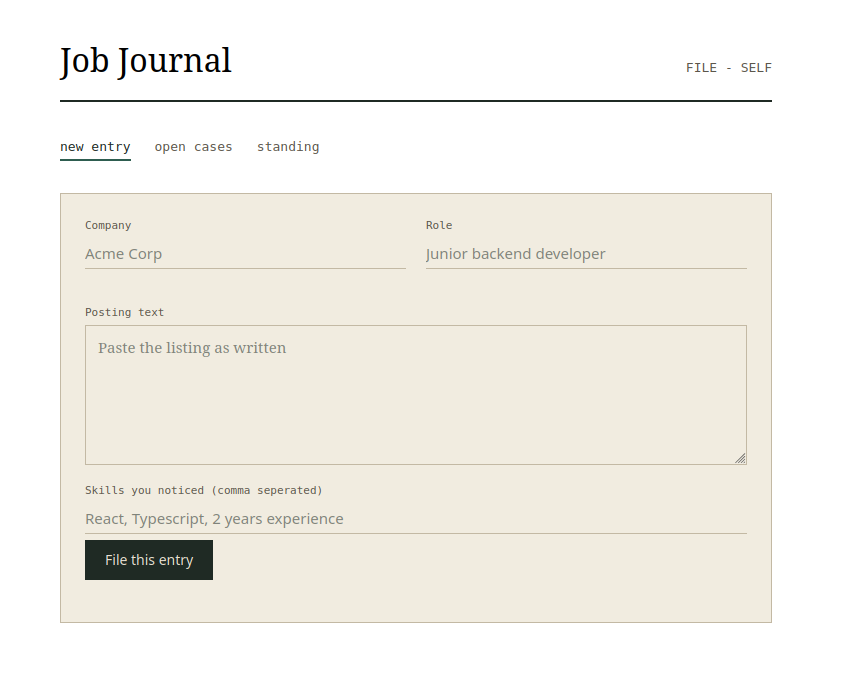
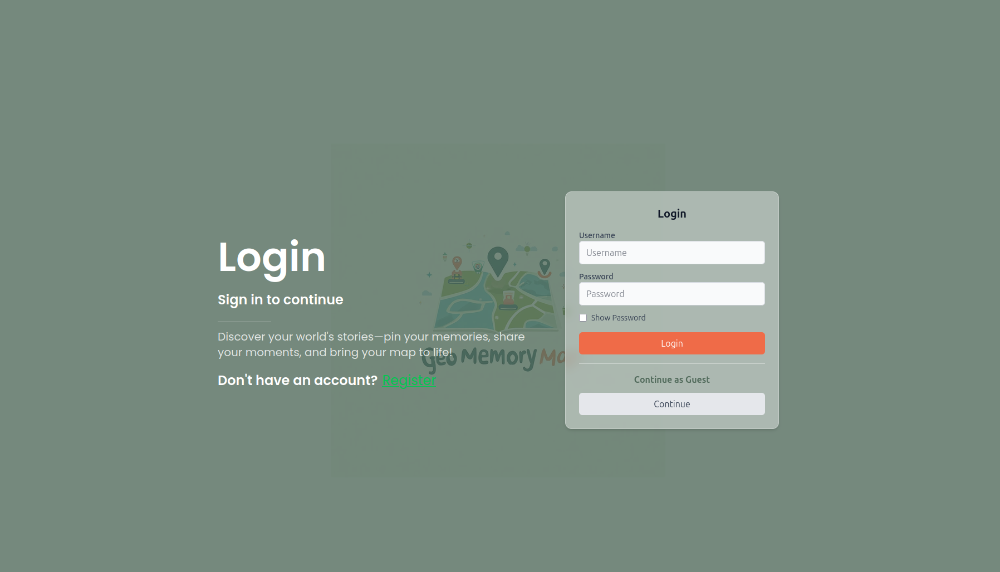
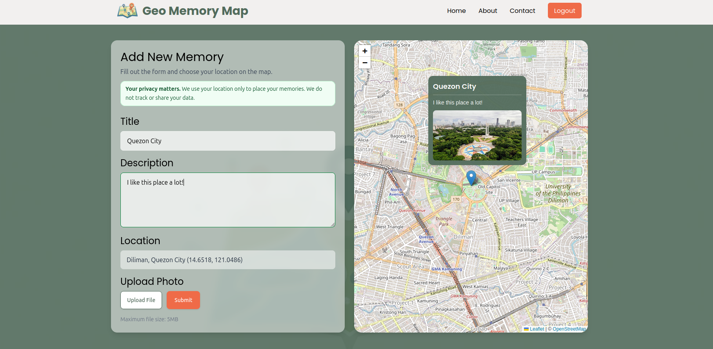
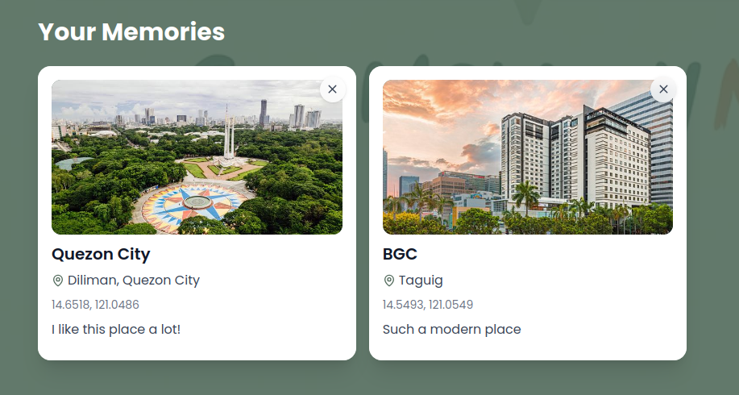
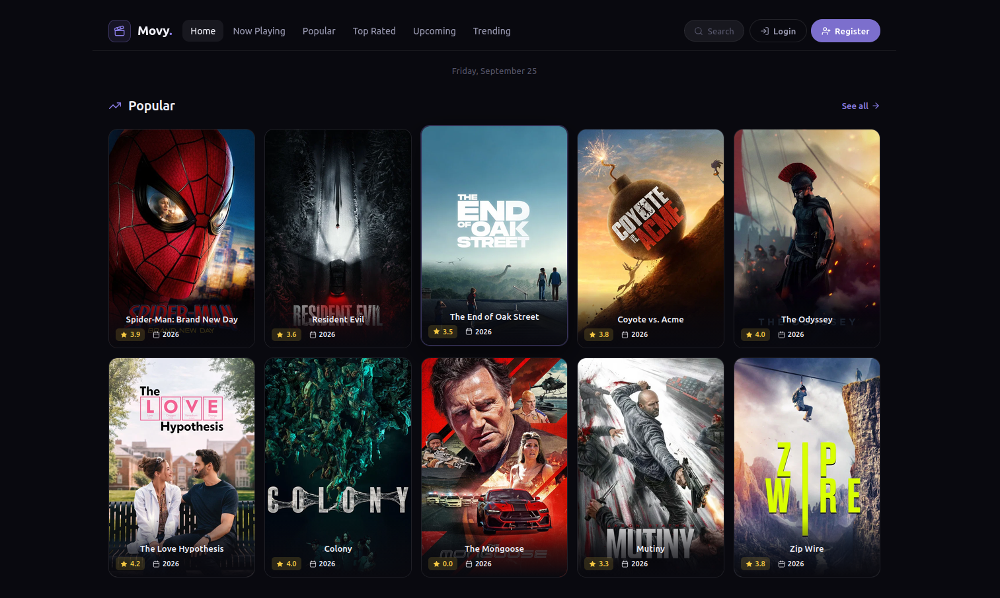
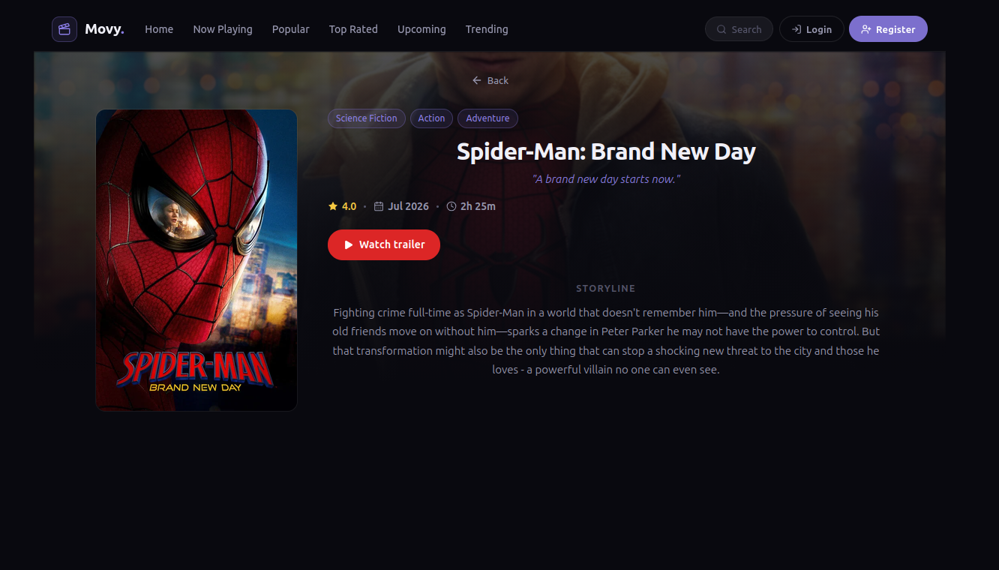
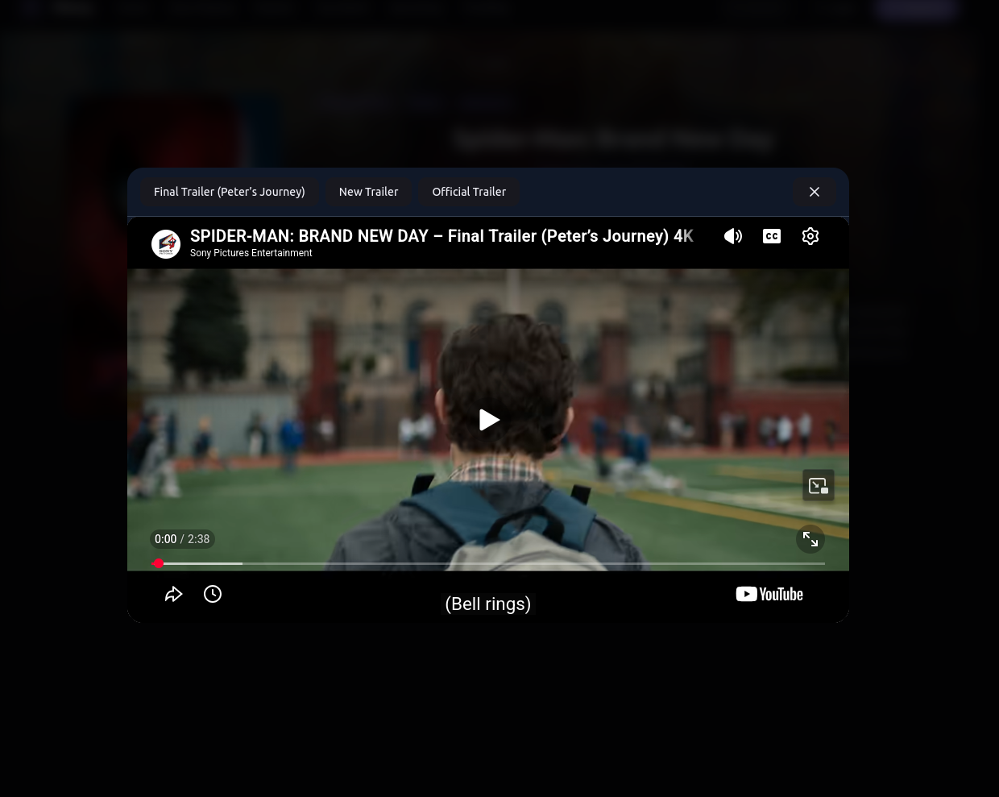

Projects 
Personal Project
Job Journal - Full Stack TypeScript Project ● DEPLOYED

September 2026 - Present
Job Journal came from wanting a better way to keep track of my own job applications instead of relying on a generic Google Sheet. I built it around the things I actually wanted to see, like where each application is, which ones have gone quiet, and which skills keep appearing across the jobs I apply for. It also became my first project where I worked seriously with TypeScript, PostgreSQL, Drizzle, and Zod, so I got to learn those technologies while building something that is genuinely useful to me.
Geo Memory Map - Full Stack MERN Project ● DEPLOYED



September 2025 - Present
Geo Memory Map started as a simple idea to make memories more visual. It became my first real team project as a full-stack developer. I led our group in building an app where users can save photos and locations, then see their memories on an interactive map. It was a huge learning experience and one I’m really proud of
Movy API - Backend Project
September 2025
Movy API started as a way for me to learn what actually goes into building a backend for a real app. I built it alongside Movy Browser so I could handle things like user accounts and watchlists myself instead of keeping everything on the frontend. Working on it gave me a better understanding of how a REST API connects to a frontend, how authentication works, and how MongoDB fits into the whole flow.
Movy Browser - ReactJS ● DEPLOYED



August 2025
I built Movy Browser to explore how React can be used to create dynamic, interactive web apps. It lets users browse movies, view details, and search across categories—all powered by a TMDB API. Through this project, I got hands-on experience with React Hooks, React Router, and API integration while learning how to organize components and make the UI feel clean and responsive
Spinomo Wheel - Vanilla JS App ● DEPLOYED
July 2025
Spinomo Wheel is a fun little web app I built using HTML, CSS, and plain JavaScript. It lets users spin a colorful wheel to get random results, complete with smooth animations and satisfying effects. I made this project to practice DOM manipulation and event handling, and it ended up being one of my favorite ways to learn while creating something playful and interactive.
Research Project
PARKWISE: Smart Parking Management System (September 2023)
I took charge of writing the research paper for this project, which looked at how smarter parking management could help ease traffic jams. While I handled the docs, the rest of the team worked on building an app that uses object detection to keep track of cars coming and going. We also added a simple way for people to reserve parking spots ahead of time, hoping to make parking less stressful and traffic flow smoother.
…with more on the way!
a few more projects cooking, can’t wait to share them here soon! :DDDD